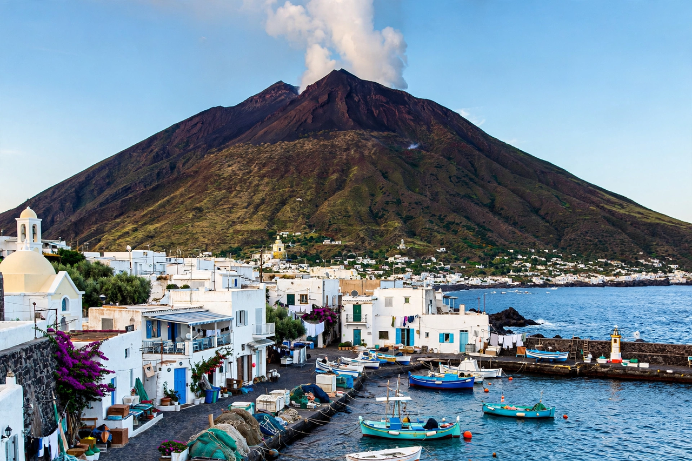

Stromboli (Italian: Stromboli, terra di Dio, "Stromboli, Land of God") is a 1950 Italian-American drama directed by Roberto Rossellini and starring Ingrid Bergman in her first collaboration with the director. Filmed on the volcanic island of Stromboli in the Aeolian archipelago, it is a key work of Italian neorealism. The production became a public scandal when Bergman and Rossellini began an affair, both being married to others at the time.
| Stromboli | |
|---|---|
| Directed by | Roberto Rossellini |
| Starring | Ingrid Bergman, Mario Vitale |
| Release date | 1950 |
| Countries | Italy, United States |
Karin, a Lithuanian refugee in a post-war Italian internment camp, marries Antonio, a fisherman from Stromboli, to escape. On the barren, volcanic island she finds the life brutally primitive and the islanders hostile and deeply traditional; her attempts to beautify her house and her conversations with the village priest mark her as an outsider. As the volcano erupts and terror mounts — including a famously graphic tuna-fishing sequence — the pregnant Karin attempts to flee across the volcano's slopes, collapsing in despair and calling on God in the closing scene, whose ambiguity is characteristic of Rossellini's cinema.
Rossellini shot with largely non-professional local actors and documentary-style location footage, in keeping with neorealist practice. RKO, the American distributor, recut the film drastically for the US market against Rossellini's wishes. The Bergman–Rossellini affair provoked outrage — Bergman was denounced on the floor of the US Senate — and effectively exiled her from Hollywood for several years; the couple went on to make five more films together, including Journey to Italy.
See also: Italian neorealism